تصنيف التعرض الإشعاعيRadiation protection for Classification of exposure
عملي · م05أقسام المحاضرة (10)
- تصنيف التعرّض الإشعاعي: غلاف التجربةExperiment 5: Classification of exposure
- تصنيف التعرّضClassification of exposure
- التعرّض المهنيOccupational Exposure
- إجراءات الوقاية للتعرّض المهنيProtection measures (occupational exposure)
- مبدأ ALARAALARA principle
- أمثلة على الجرعات الإشعاعيةRadiation dose examples
- التعرّض الطبيMedical Exposure
- مبادئ الوقاية الإشعاعية الطبيةPrinciples of medical radiation protection
- تعرّض عامة الناسPublic Exposure
- إجراءات الوقاية لتعرّض عامة الناسProtection measures (public exposure)
تصنيف التعرّض الإشعاعي: غلاف التجربةExperiment 5: Classification of exposure
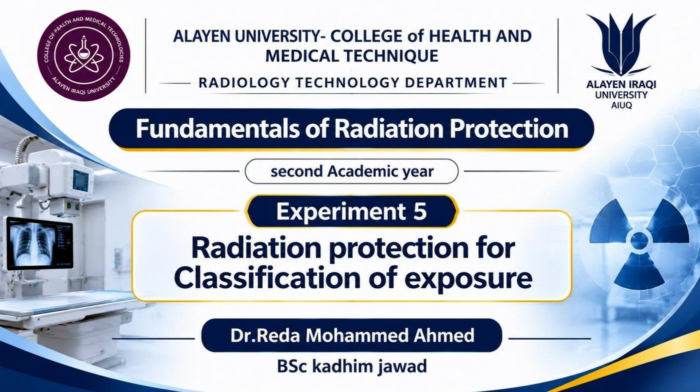
التجربة 5: الوقاية الإشعاعية لتصنيف التعرّضExperiment 5 Radiation protection for Classification of exposure
الفكرة المهمةموضوع هذه التجربة: تصنيف التعرّض الإشعاعي في أساسيات الوقاية من الإشعاع.Experiment 5 covers the classification of radiation exposure in Fundamentals of Radiation Protection.
تصنيف التعرّضClassification of exposure
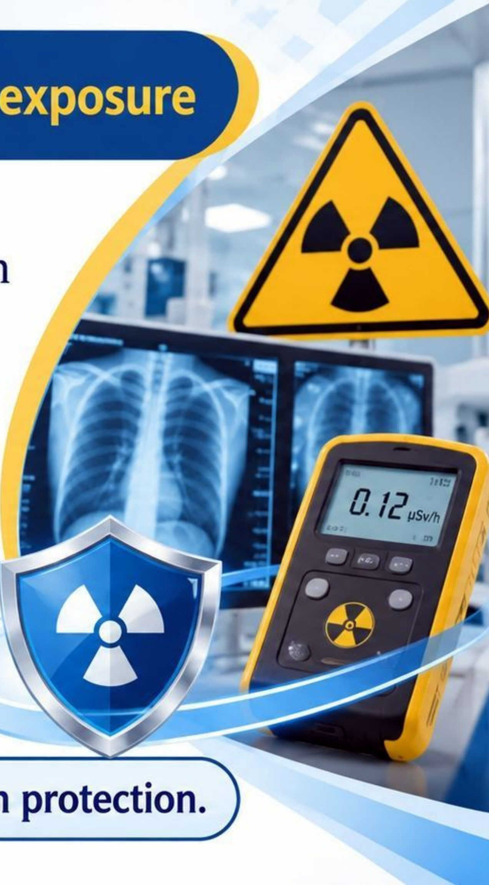
الوقاية الإشعاعية لتصنيف التعرّضRadiation protection for Classification of exposure
- • According to the recommendations of the International Commission on Radiological Protection (ICRP), the primary classification of exposure in radiation protection includes:بحسب توصيات اللجنة الدولية للوقاية من الإشعاع (ICRP)، يشمل التصنيف الأساسي للتعرّض في الوقاية الإشعاعية ما يأتي:
- • Occupational exposure1. التعرّض المهني
- • Medical exposure2. التعرّض الطبي
- • Public exposure3. تعرّض عامة الناس
- • Each category requires a different approach radiation protection.كل فئة تتطلب نهجاً مختلفاً في الوقاية الإشعاعية.
الفكرة المهمةيصنّف ICRP التعرّض إلى ثلاث فئات: المهني والطبي وتعرّض عامة الناس، ولكل فئة نهج وقاية مختلف.ICRP classifies exposure into occupational, medical and public exposure; each needs a different protection approach.
التعرّض المهنيOccupational Exposure
1. التعرّض المهني1.Occupational Exposure
- • It includes people who work with or near radiation sources, such as doctors, radiologic technologists, nuclear plant workers, and industrial radiographers.يشمل الأشخاص الذين يعملون مع مصادر الإشعاع أو بالقرب منها، مثل الأطباء وفنيّي الأشعة والعاملين في المحطات النووية ومصوّري الأشعة الصناعية.
الفكرة المهمةالتعرّض المهني يخص العاملين مع مصادر الإشعاع أو قربها: أطباء، فنيو أشعة، عاملو محطات نووية، ومصوّرو أشعة صناعية.Occupational exposure covers people working with or near radiation sources.
إجراءات الوقاية للتعرّض المهنيProtection measures (occupational exposure)
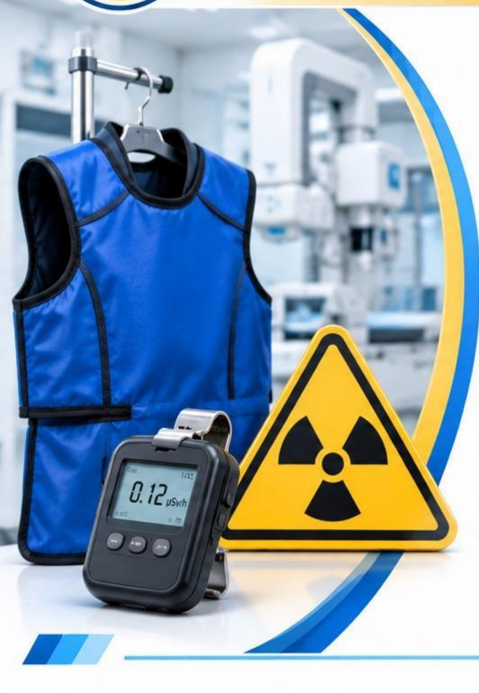
إجراءات الوقايةProtection measures
- • Time: Minimize the time spent near radiation sources.الزمن: قلّل الوقت المقضي بالقرب من مصادر الإشعاع.
- • Distance: Increase the distance from the radiation source whenever possible.المسافة: زد المسافة عن مصدر الإشعاع كلما أمكن ذلك.
- • Shielding: Use appropriate structural shielding and personal protective equipment, such as lead aprons.التدريع: استخدم تدريعاً إنشائياً مناسباً ومعدات الوقاية الشخصية، مثل المآزر الرصاصية.
- • Personal dosimetry: Wear personal 4 dosimeters according to the facility's radiation protection program.قياس الجرعة الشخصية: ارتدِ أجهزة قياس الجرعة الشخصية وفق برنامج الوقاية الإشعاعية في المنشأة.
الفكرة المهمةإجراءات الوقاية المهنية أربعة: الزمن، والمسافة، والتدريع، وقياس الجرعة الشخصية.Four occupational protection measures: time, distance, shielding and personal dosimetry.
مبدأ ALARAALARA principle
ALARAALARA
مبدأ تقليل التعرّض الإشعاعيPrinciple Minimizing Radiation Exposure
- • Reduce time: Less time spent near source. less radiation received.تقليل الزمن: كلما قلّ الوقت المقضي قرب المصدر قلّ الإشعاع المتلقّى.
- • Increase distance: Greater distance from source. less radiation received.زيادة المسافة: كلما زادت المسافة عن المصدر قلّ الإشعاع المتلقّى.
- • Increase shielding: Behind shielding from source. less radiation received.زيادة التدريع: عند الوقوف خلف تدريع يحجب المصدر قلّ الإشعاع المتلقّى.
الفكرة المهمةمبدأ ALARA لتقليل التعرّض: قلّل الزمن، وزد المسافة، وزد التدريع، فيقل الإشعاع المتلقّى.ALARA: reduce time, increase distance, increase shielding — less radiation received.
أمثلة على الجرعات الإشعاعيةRadiation dose examples
أمثلة على الجرعات الإشعاعيةRadiation dose examples
- • Radiation dose (millisievert : mSv)الجرعة الإشعاعية (ملّي سيفرت : mSv)
- • 1,000 mSv: Dose that may cause symptoms of radiation sickness1,000 mSv: جرعة قد تسبب أعراض داء الإشعاع
- • 100 mSv: Five-year dose limit for nuclear energy workers100 mSv: حد الجرعة لخمس سنوات للعاملين في الطاقة النووية
- • 7 mSv: Typical chest CT scan7 mSv: تصوير الصدر المقطعي (CT) النموذجي
- • 1 mSv: Annual public dose limit1 mSv: الحد السنوي للجرعة لعامة الناس
- • 0.1 mSv: Typical chest X-ray0.1 mSv: صورة الأشعة السينية النموذجية للصدر
- • 0.005 mSv: Dental X-ray (intraoral)0.005 mSv: أشعة الأسنان السينية (داخل الفم)
- • 150 mSv: Average annual exposure to astronauts working on the International Space Station150 mSv: متوسط التعرّض السنوي لرواد الفضاء العاملين على محطة الفضاء الدولية
- • 50 mSv: Annual dose limit for nuclear energy workers50 mSv: الحد السنوي للجرعة للعاملين في الطاقة النووية
- • 1.8 mSv: Average annual dose from natural background radiation in Canada1.8 mSv: متوسط الجرعة السنوية من الإشعاع الخلفي الطبيعي في كندا
- • 1 mSv: Typical annual dose received by a worker in a nuclear power plant in Canada1 mSv: الجرعة السنوية النموذجية التي يتلقاها عامل في محطة طاقة نووية في كندا
- • 0.02 mSv: Typical cross-Canada flight0.02 mSv: رحلة جوية نموذجية عبر كندا
- • 0.001 mSv: Typical dose from living within a few km of an operating nuclear power plant in Canada for one year0.001 mSv: الجرعة النموذجية من العيش على بعد بضعة كيلومترات من محطة طاقة نووية عاملة في كندا لمدة سنة
الفكرة المهمةأمثلة للمقارنة: الصدر السيني 0.1 ملّي سيفرت، والصدر المقطعي 7، وحد عامة الناس السنوي 1، و1,000 قد تسبب أعراض داء الإشعاع.Chest X-ray 0.1 mSv; chest CT 7 mSv; annual public limit 1 mSv; 1,000 mSv may cause radiation sickness.
التعرّض الطبيMedical Exposure
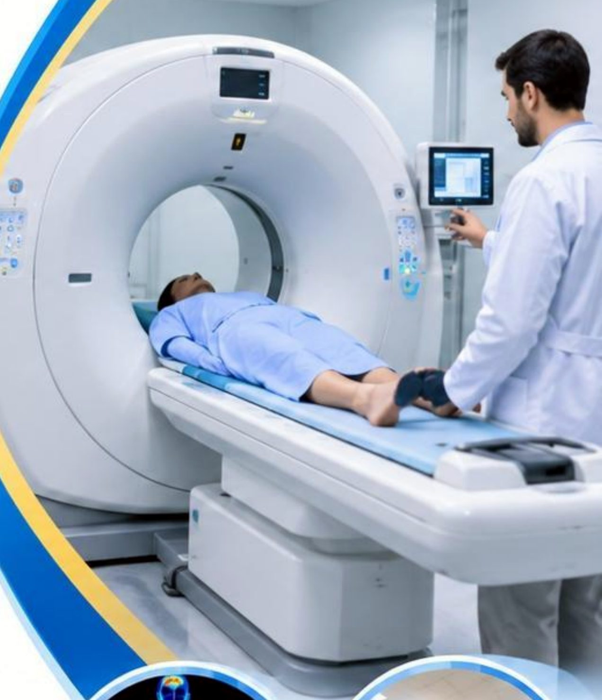
2. التعرّض الطبي2.Medical Exposure
- • Medical exposure is the exposure to ionizing radiation associated with medical diagnosis or treatment.التعرّض الطبي هو التعرّض للإشعاع المؤيِّن المرتبط بالتشخيص الطبي أو العلاج.
- • It primarily includes patients undergoing X-ray imaging, CT scans, fluoroscopy, nuclear medicine examinations, and radiation therapy.يشمل بصورة أساسية المرضى الخاضعين للتصوير بالأشعة السينية والتصوير المقطعي (CT) والتنظير الشعاعي وفحوصات الطب النووي والمعالجة الإشعاعية.
- • Medical exposure may also include people who assist patients circumstances .قد يشمل التعرّض الطبي أيضاً الأشخاص الذين يساعدون المرضى في ظروفهم.
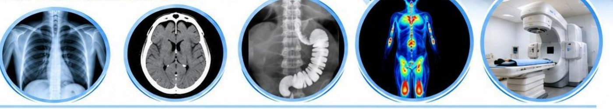
الفكرة المهمةالتعرّض الطبي يخص المرضى في التشخيص أو العلاج: أشعة سينية، مقطعي، تنظير شعاعي، طب نووي، ومعالجة إشعاعية.Medical exposure: patients in diagnosis or treatment (X-ray, CT, fluoroscopy, nuclear medicine, radiation therapy).
مبادئ الوقاية الإشعاعية الطبيةPrinciples of medical radiation protection
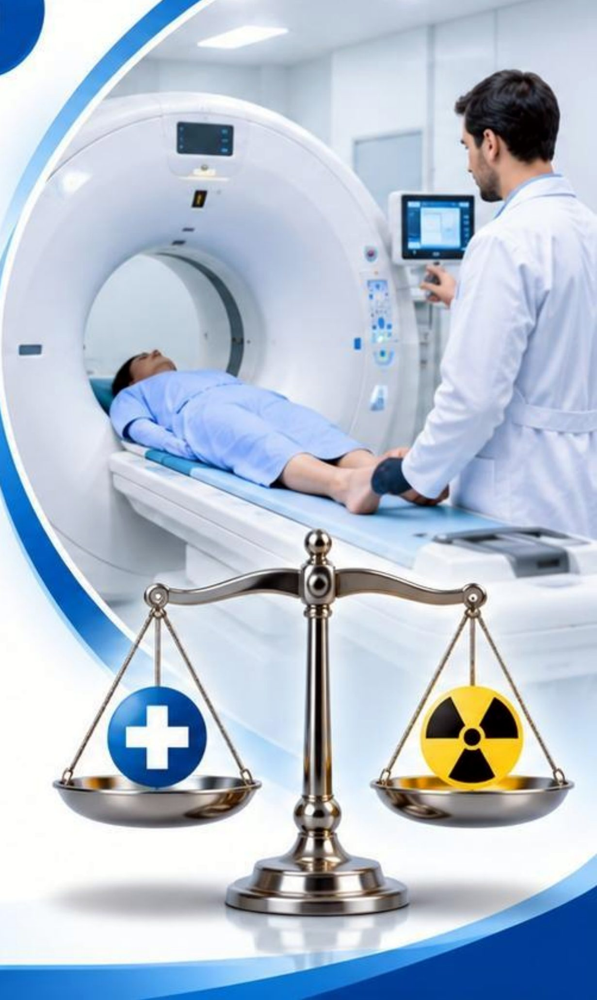
مبادئ الوقاية الإشعاعية الطبيةPrinciples of medical radiation protection
- • Every medical examination involving ionizing radiation should be justified by determining whether the expected clinical benefit outweighs the potential radiation risk.ينبغي تبرير كل فحص طبي يستخدم الإشعاع المؤيِّن بتحديد ما إذا كانت الفائدة السريرية المتوقعة تفوق الخطر الإشعاعي المحتمل.
- • The radiation dose should be optimized to obtain the required diagnostic information or therapeutic outcome while avoiding unnecessary exposure.ينبغي أمثَلة الجرعة الإشعاعية للحصول على المعلومات التشخيصية المطلوبة أو النتيجة العلاجية مع تجنّب التعرّض غير الضروري.
الفكرة المهمةمبدآ الوقاية الطبية: التبرير (الفائدة تفوق الخطر) والأمثَلة (الجرعة المطلوبة بلا تعرّض غير ضروري).Medical protection: justification (benefit outweighs risk) and optimization (needed dose, no unnecessary exposure).
تعرّض عامة الناسPublic Exposure
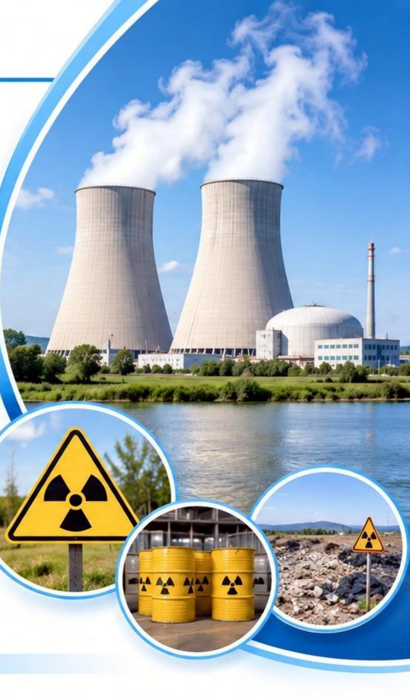
3. تعرّض عامة الناس3. Public Exposure
- • Public exposure refers to exposure to ionizing radiation received by members of the general public from radiation sources, excluding occupational and medical exposure.تعرّض عامة الناس يشير إلى التعرّض للإشعاع المؤيِّن الذي يتلقاه أفراد عامة الناس من مصادر الإشعاع، باستثناء التعرّض المهني والطبي.
- • It may result from environmental releases, radiation facilities, radioactive waste .قد ينتج عن الانبعاثات البيئية والمنشآت الإشعاعية والنفايات المشعة.
الفكرة المهمةتعرّض عامة الناس هو تعرّض أفراد الجمهور لمصادر الإشعاع باستثناء المهني والطبي، وقد ينتج عن الانبعاثات البيئية والمنشآت والنفايات المشعة.Public exposure: general public exposure from radiation sources, excluding occupational and medical exposure.
إجراءات الوقاية لتعرّض عامة الناسProtection measures (public exposure)
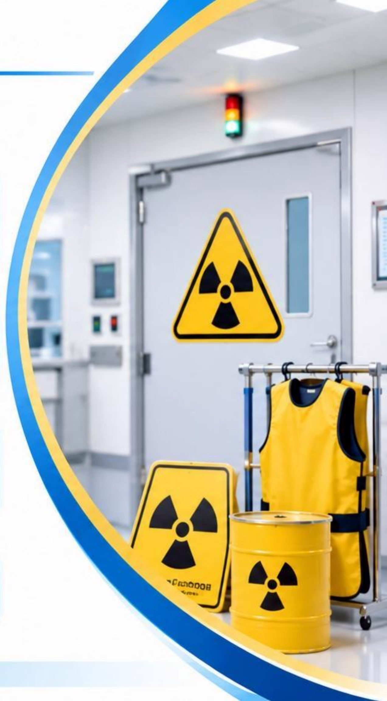
إجراءات الوقايةProtection measures
- • Shielding and facility design: Use appropriate barriers and structural shielding to prevent unnecessary exposure.التدريع وتصميم المنشأة: استخدم حواجز وتدريعاً إنشائياً مناسباً لمنع التعرّض غير الضروري.
- • Control of radioactive materials: Ensure safe storage, handling, transport, and disposal.ضبط المواد المشعة: تأكّد من الخزن والتداول والنقل والتخلّص الآمن.
- • Environmental monitoring: Monitor radiation levels around relevant facilities and assess potential public exposure.الرصد البيئي: راقب مستويات الإشعاع حول المنشآت ذات الصلة وقيّم التعرّض المحتمل لعامة الناس.
- • Access control: Restrict access to controlled radiation areas.التحكم بالدخول: قيّد الدخول إلى مناطق الإشعاع المراقَبة.
الفكرة المهمةإجراءات حماية عامة الناس أربعة: التدريع وتصميم المنشأة، وضبط المواد المشعة، والرصد البيئي، والتحكم بالدخول.Four public protection measures: shielding/facility design, control of radioactive materials, environmental monitoring, access control.
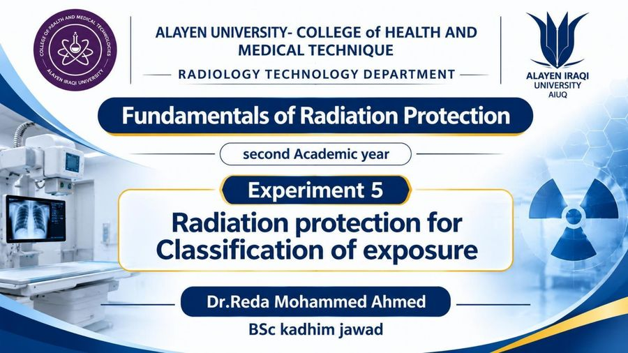
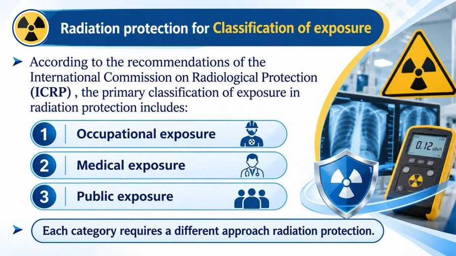
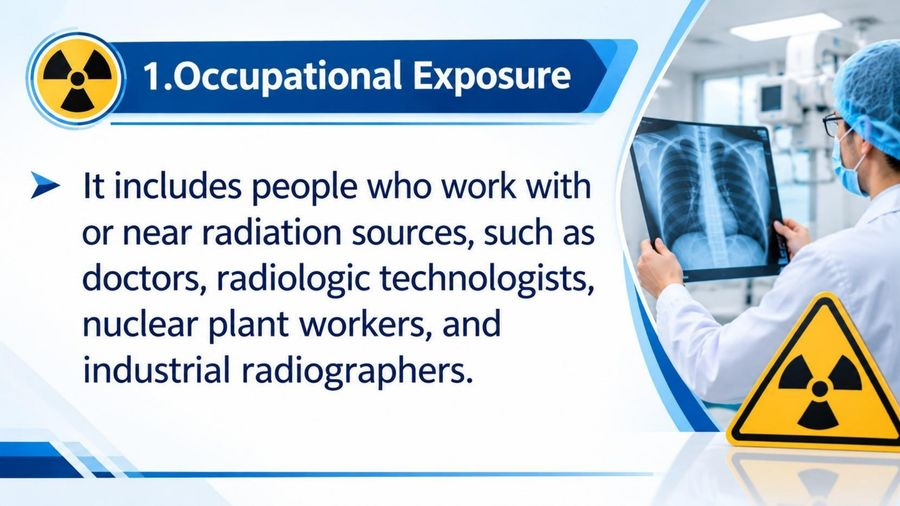
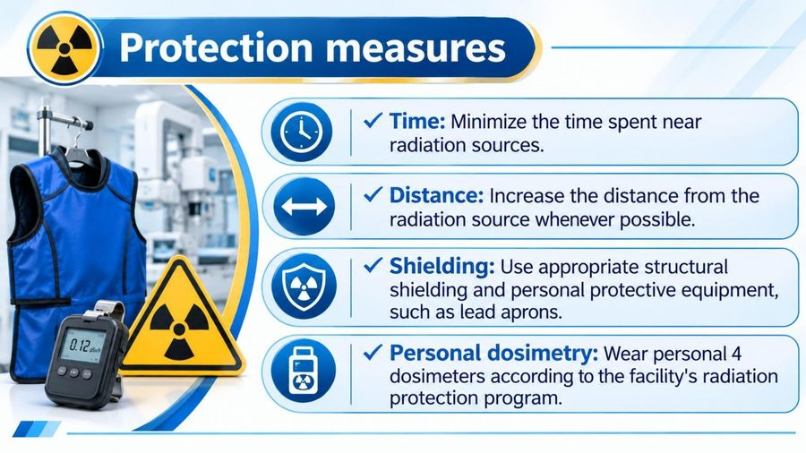
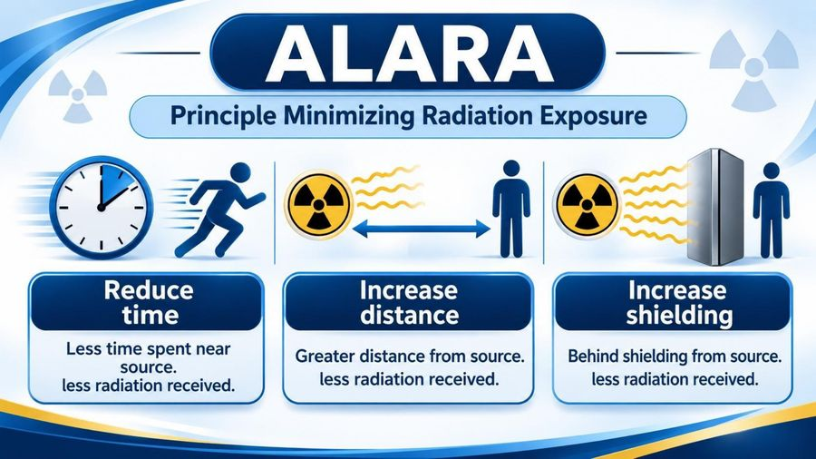
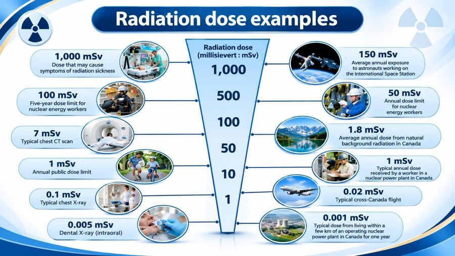
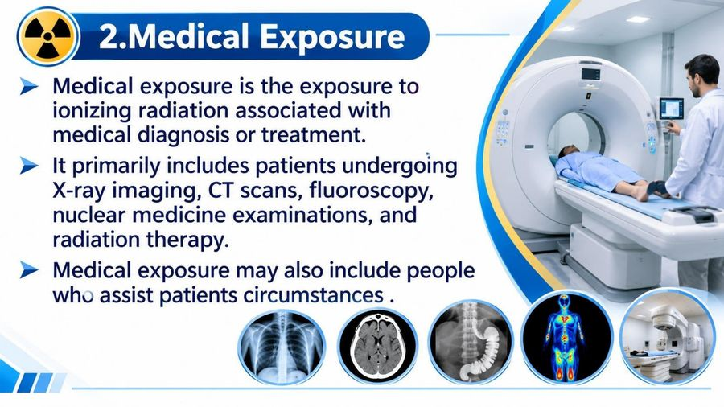
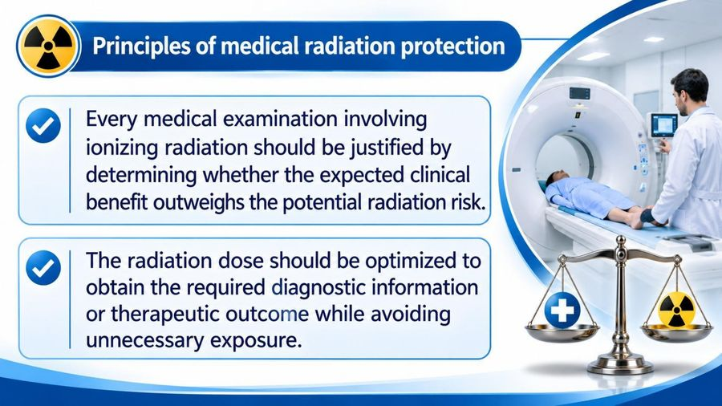
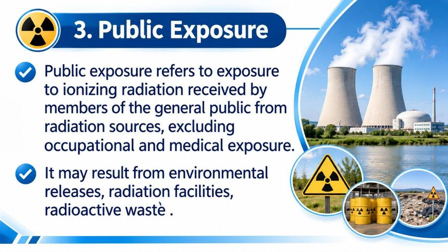
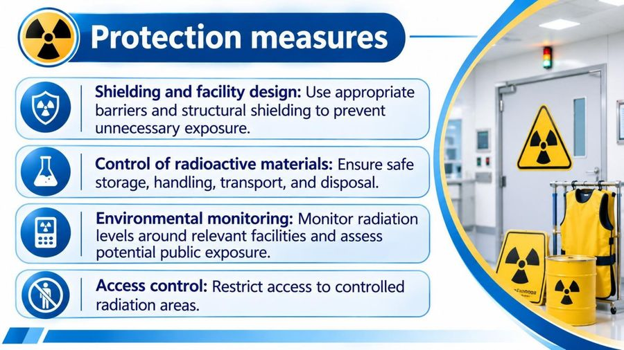

الصوت بعده ما جاهز.
الاختبار بعده ما جاهز.
اضغط أي مصطلح منقّط تسمع لفظه ومعناه.
Classification of exposureتصنيف التعرّض
Occupational exposureالتعرّض المهني
Medical exposureالتعرّض الطبي
Public exposureتعرّض عامة الناس
ICRPاللجنة الدولية للوقاية من الإشعاع (ICRP)
ALARAأقل ما يمكن بلوغه بصورة معقولة (ALARA)
Shieldingالتدريع
Personal dosimetryقياس الجرعة الشخصية
Lead apronالمئزر الرصاصي
Justificationالتبرير
Optimizationالأمثَلة
Environmental monitoringالرصد البيئي
الملف بعده ما جاهز.